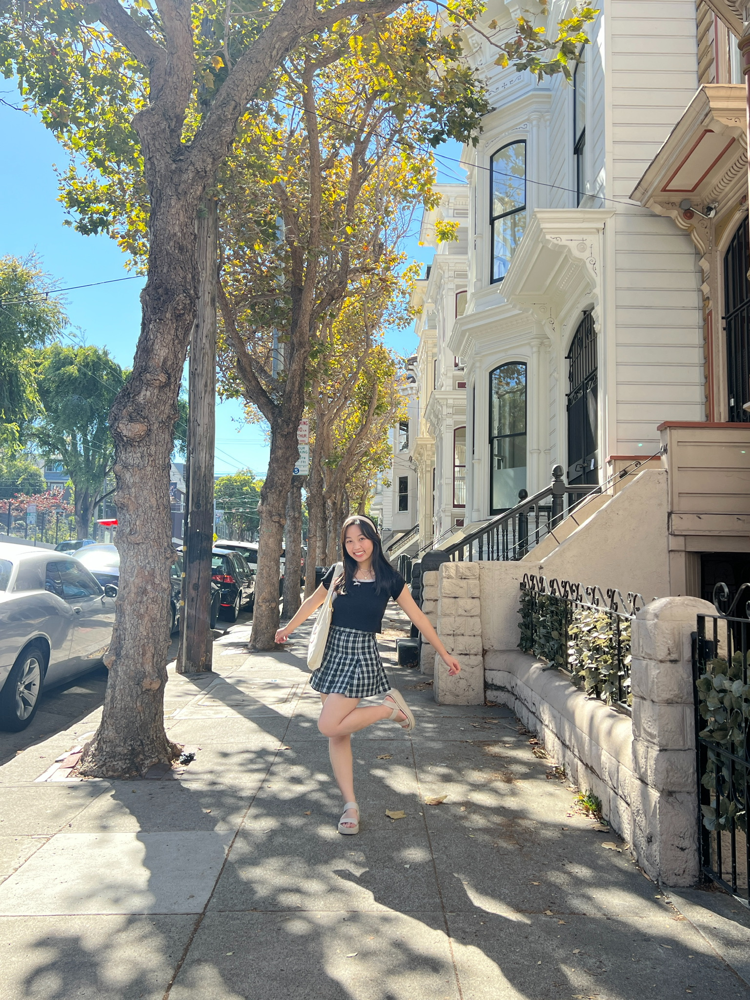
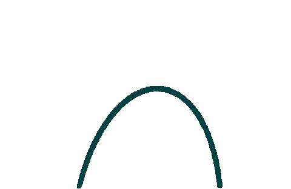

get to know me. Personally.

meet kaitlyn — when she's not working.
When I am not coding or studying you can find me at your local coffee shop or bakery. I love desserts
and discovering new shops with specialty drinks and pastries. I also have a deep appreciation for crafts
such as crocheting and bullet journaling. When you're in front of the screen all day, an acitvity that
allows
me to step away for a bit and do something with my hands is an amazing break that allows my brain to reset.
I love to travel as well. I have been fortunate to be able to travel to Asian countries like Japan, Vietnam,
and Hong Kong several of times with my family. Those experiences have made me fall in love with immersing
myself in new cultures. After the pandemic, I definitely have a new appreciation for travelling and can't
wait
for things to start getting back to normal so that I can visit these places again! My love for travelling
has led to my
love in learning languages. With Cantonese as my native tounge and learning Japanese in high school and
college, I'm always studying
whenever I can get a chance and meeting new people to practice these skills!
